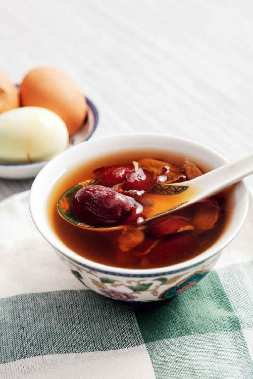
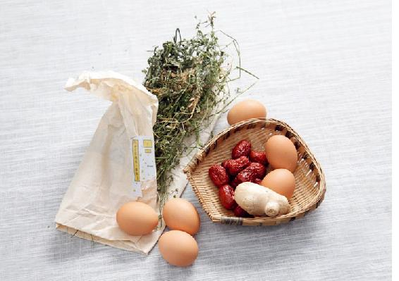
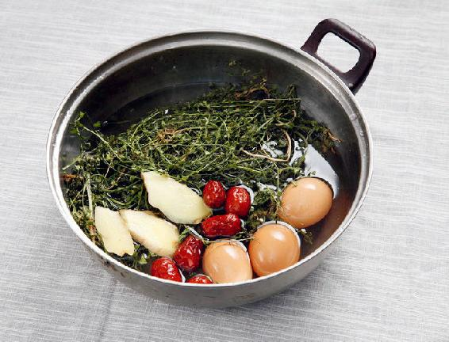
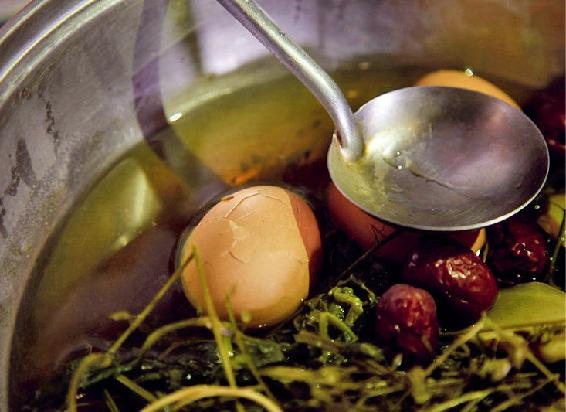
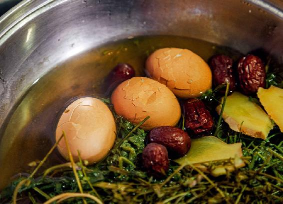
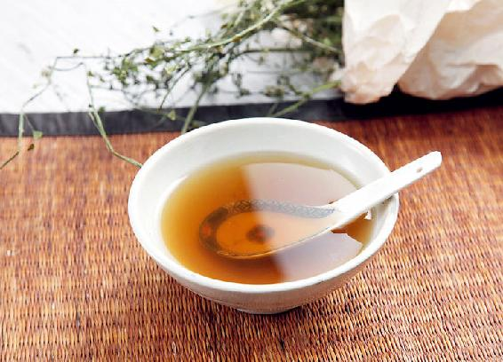
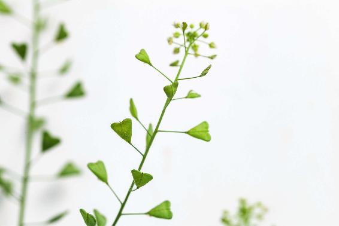
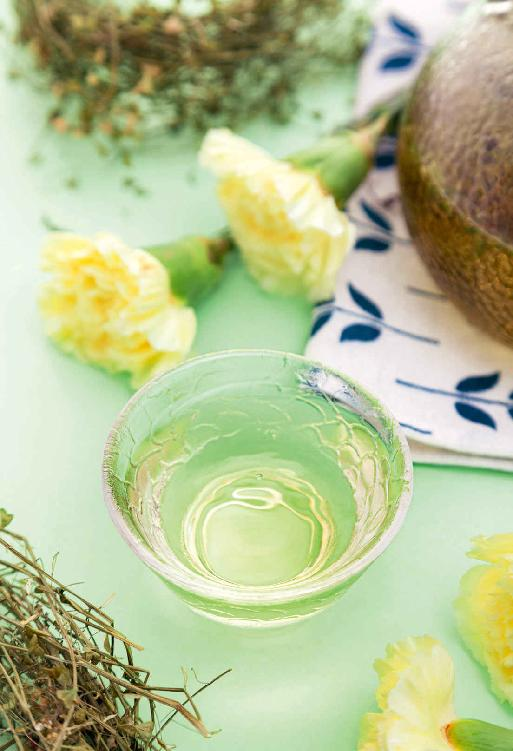

上巳节古代有两个风俗：一是要去水边，二是要吃上巳菜。这两个风俗由来已久，其中包含三件事情，蕴含着很深的文化内涵和养生目的。
上巳节去水边的这个习俗，《论语·侍坐》里有过记述，有一次，孔子和几个弟子坐在一起谈论理想，其间，曾晳说到，我的理想跟其他人不一样：“暮春者，春服既成，冠者五六人，童子六七人，浴乎沂，风乎舞雩（yú），咏而归。”孔子听后，对他大加赞赏。
曾皙的理想是不是就是带着一群人在暮春的时候去河边游玩呢？其实不是，他讲的是古代一件非常重要的大事——每年农历三月的祓禊（fú xì）。这是古人在上巳节举行的一个盛大仪式，为了祭祀地神，也为了祈福，最重要的是要在水边洗去一切不祥之物。
这其实是古人很巧妙的一种卫生保健的方式。暮春的时候，天气回暖了，大家都到水边去洗一洗，洗去积存了一个冬天的脏东西。同时，大家一起来游玩，在水边呼吸新鲜的空气，也达到了愉悦身心、疏发肝气的养生目的。
古人去水边洗浴的时候，会用到佩兰。青年男女则手持兰草到水边洗浴，借此机会相约。
《诗经》里写过这件事：“溱（zhEn）与洧（wDi），方涣涣兮。士与女，方秉蕑（jiQn）兮。”
溱、洧是郑国的两条河。蕑，就是兰草。
佩兰不仅香气清雅，还可以理气、化湿、清利头目，它还能祛除皮肤的油垢，起到深层清洁的作用。
现在的我们也可以仿效古人，以佩兰、藿香等香草配成浴包来洗澡和洗发，使身体散发香气，久用还可以使皮肤变白。
读者评论：吃了荠菜煮鸡蛋，很舒服
果子_h3j：昨天喝了荠菜鸡蛋汤，鸡蛋很好吃，汤也很好喝。
糖大猫：按老师说的吃了荠菜煮鸡蛋，味道很鲜美，吃完后很舒服。
人有精气神：上巳节煮了荠菜鸡蛋汤，感觉两个脚丫子特别温暖、舒服，身上也暖洋洋的。
三月三：早上喝了荠菜鸡蛋汤，到晚上居然吃饭有胃口了，继续喝几天。感谢老师！
青山常在：去年冬天阳台上种的荠菜，今年清明前已开花结子，昨天晚上都拔出来做了荠菜鸡蛋汤，好吃，感谢陈老师的无私分享。
元壹斋：感谢陈老师，近几个月来我一直便秘，喝了两次荠菜鸡蛋汤就好了。

荠菜鸡蛋汤

原料：荠菜1大把，鸡蛋6个，红枣12个，带皮生姜6片。这是一家人的用量，如果您家里人口少，可以相应地把鸡蛋减少，同时其他材料也按比例减少。

做法：
1.把整株的荠菜连根一起洗干净，摘掉黄叶。把鸡蛋外壳清洗干净。把洗好的荠菜和鸡蛋一起放入锅里，再放入红枣、生姜片。

2.加水煮开，水开后再煮3~5分钟，待鸡蛋里的蛋清凝固了，用勺子轻轻地敲一敲鸡蛋壳，让它出现轻微的裂纹，以便让荠菜汤的药性更好地渗透进去。

3.再煮10分钟，就可以关火了。关火后，不要急于掀开锅盖，要让汤自然晾温。在这段时间，鸡蛋会继续吸附荠菜的药性。

4.汤变温以后，把它盛出来。鸡蛋捞出来剥壳吃掉，汤喝掉，红枣也可以吃掉，荠菜太老就不要吃了。
允斌解惑：荠菜鸡蛋汤可以每天吃
如意：想请教您，荠菜鸡蛋汤就喝上巳节这一顿吗？我挖了好多的荠菜。
允斌：可以每天吃。
宋芊 ：荠菜鸡蛋汤孩子不愿意吃，我后来加了点白糖！没问题吧？
允斌：可以的，主要是吃吸附了荠菜药性的鸡蛋。
阿雅雅：有人说荠菜有止血作用，经期不适宜吃，请问是这样的吗？
允斌：《回家吃饭的智慧》书上写过的，荠菜有止血作用。经期量大阶段可以不吃。
现在很少有人到河边去洗澡了，自己在家里就可以完成。但上巳节这天，我们依然需要祛除冬天积存在身体内的一种“污垢”——陈寒，而上巳节吃上巳菜就可以帮助我们完成这个任务。
上巳菜就是荠菜。
“寻药踏青采嫩芽，能蔬可牧利农家。溪头翠叶春花白，羡煞城中桃李花。”这是我母亲年轻时写的一首谜语诗，打一种人们常吃的野菜——荠菜。

荠菜，我给它打一个比方，叫作菜中之甘草。它具有甘草的性格，无论是味道还是药性都非常平和，很百搭，各种体质的人吃了它都有好处，小到8个月的孩子，大到80岁的老人都能吃。它还可以祛除人体内的陈寒，又不会让人上火，可以说是寒热通杀。
如果您对中国的古典诗词有一些了解的话，就知道诗的最后两句，“溪头翠叶春花白，羡煞城中桃李花”，化用了南宋词人辛弃疾写的两句词，“城中桃李愁风雨，春在溪头荠菜花”。
桃花、李花虽然很鲜艳，但风雨一来，它们的花瓣就会凋零。而荠菜的花非常小，是白色的，星星点点的，却经得起风吹雨打。在春风、春雨容易让人生病的季节，吃荠菜同样可以让我们的身体经得起风吹雨打。
读者评论：侄子喝了荠菜水后再也不吃外面的垃圾食品了
涂涂_fon ：我早春一共吃了8斤（4千克）荠菜，每天都从冰箱拿一把吃。一段时间后，我发现晨起后喉咙干干净净的，舌苔也正常了。整个春天没有感冒咳嗽过。
素欣：我昨晚牙龈肿痛，喝了荠菜水后第二天居然消肿了。
姗姗：我妈有30年的月子病，喝了荠菜水后觉得身上暖和和的。家里的侄子喝了荠菜水后也不吃外面的垃圾食品了，反而爱上了吃荠菜。
农历三月初三是上巳节了，人们都要吃上巳菜——荠菜。
三月初三前后，吃荠菜对身体特别有好处，所以您可以提前准备起来。
您是否还记得在立春节气的时候，我推荐的五辛盘的搭配里面有芹菜、韭菜、香菜、萝卜缨和荠菜五种蔬菜？
开春头一个月吃五辛盘，为的是打开身体气的通道，让气血通畅，排出浊气，生发阳气。其中，荠菜起到的作用就是利肝气。
三月三吃荠菜，跟开春时吃荠菜又有一点不同：开春时，荠菜非常鲜嫩，我们把它当成蔬菜来吃；到了三月三，南方大部分地区的荠菜都已经开花结子了，已经老了，这时候，我们把它当成药来吃。当然，北方地区的荠菜可能才刚刚长出来，这时候您吃全株的荠菜也是不晚的。
1.什么叫作陈寒呢？
三月三前后这段时间，我们吃荠菜的主要目的是为了祛陈寒。什么叫作陈寒？这是我家里传下来的一个说法，人体内积存的“陈年寒气”，我们把它称为“陈寒”。
从小母亲就教我们，一定要吃荠菜，它能“搜陈寒”。这个“搜”字很形象，说明它能将人体年深日久的陈寒给搜出来，这是荠菜对我们最好的贡献。
《黄帝内经》说：“冬伤于寒，春必病温。”如果我们在冬天被寒气所伤，又没有及时化解，寒气就会在身体内潜伏下来变成“陈寒”。到了春天，人体阳气生发，这些潜伏的寒气也就跟着发作起来。寒极生热，就会引起古人所说的一些温病，也就是现在讲的会使人发热的流行病，比如流感、鼻炎、禽流感等。
为了防止在春天的时候患上温病，我们就要祛除冬天积存在体内的寒气。但在春天祛寒，我们不能用大辛大热的药，否则容易上肝火，而荠菜祛陈寒的功效特别强，其药性又十分平和，不会使人上火。
荠菜是平性的，它的特别之处在于既能祛陈寒，又能祛血热，使积存在人体内的陈寒不会化为内火，从而维持人体的寒热平衡。

用荠菜祛陈寒，可以采用食疗方法。因为荠菜可能是我们最熟悉的野菜了，像上海有名的菜肉馄饨，里面放的就是荠菜。在南方地区，荠菜发得早，在农历一二月份就有了。
有读者说她早就开始用荠菜包饺子给孩子吃，孩子吃了荠菜馅儿的饺子后，觉得非常鲜美，就不愿意再吃其他馅儿的饺子了。她和女儿吃了荠菜馅儿的饺子之后，整个春天都没感冒发热，而她的先生由于工作的原因，没在家吃荠菜饺子，开春以后还感冒了两次。
不管是在南方地区还是在北方地区，在有条件的情况下，春天时我建议您尽量地多吃荠菜，以预防春季的流行病。
2.荠菜是如何祛热的呢？
荠菜不仅可以祛寒，还能祛热，因为它药性非常平和，既不偏寒，也不过热。
荠菜祛寒不会引起内火，祛热又不会导致寒凉上升，可以说是寒热通杀。
荠菜是怎样祛热的呢？它入我们身体的胃经，可以降胃火，但它又不苦寒，不会伤胃。小朋友食积的话，不妨用荠菜煮水给他喝，既可以助消化，又不会伤到孩子的胃气。
荠菜还可以清小肠经的火，对一些中老年妇女的小便不利很有帮助。
它还可以入脾经，可以祛湿，可以健脾。对在春天有一些过敏性疾病的人来说，吃荠菜是个很好的保健方法。
3.整株的荠菜煮水喝，效果比较好
如果想要用荠菜健脾祛湿的话，最好带着荠菜子一起吃。对于已经结子的荠菜，整株煮水效果比较好。
荠菜还有止血的功效，有些朋友平时经常流鼻血，或者刷牙的时候牙龈出血，在这段时间，您就可以多吃一点荠菜，来预防这些出血症。
4.老人和不到周岁的婴儿都能吃荠菜
荠菜的药性是非常平和的，婴儿也是可以用的。不到周岁的婴儿，只要在他可以吃辅食的情况下，就可以在他食积的时候用老荠菜（带子的荠菜）整株煮水给他喝，这样就能调理好。
经常喝荠菜水的孩子，长大以后不容易得胃病。
老年人吃荠菜有降血压的功效，还能预防白内障。同时，对老年人的小便困难、淋漓不尽也有疏通的作用。
对一般人来说，春天的时候吃荠菜，不仅可以预防各种流行病，还可以缓解一些在春天容易出现的过敏症状。
在我母亲出的谜语诗里，“寻药踏青采嫩芽，能蔬可牧利农家”，这两句诗说的就是荠菜。它不仅是一种野菜，还是一味好药。
读者评论：荠菜袪寒是真的厉害
丹丹：荠菜真是太好了！前段时间，我家孩子食积发热了一次，好了之后舌苔就一直很厚，用消食的药也不行，没想到喝荠菜水竟然好了。
Sarah俞：袪寒是真的厉害。这次我和儿子相继感冒，什么药都没吃，就喝荠菜水，没两天就全好了。像往常我儿子会咳嗽得很厉害，这次真的让我很惊喜。
Cathy Su：老师，我是湿热体质，脾胃虚寒，身体一直不好，一年四季不敢吹风，夏天也不敢吹风，但是今年顺时生活，喝荠菜水以后，我现在不怕吹风啦。
紫缘物语：用晒干的老荠菜煮水给宝宝喝，眼屎没有了，食积（口气酸臭）喝上两三次，又好了。
Sunny：允斌老师您好，我在您的《回家吃饭的智慧》上看到说荠菜可以搜月子里的陈寒，刚好我在坐月子，就让家里人采了新鲜的荠菜煮水给我喝，很见效，之前晚上睡觉总出汗，喝了荠菜水之后就不出汗了。
Mina：老师，我昨天又拉肚子又便秘真难受，我想可能是身体的陈寒化为内火了，就赶紧煮了一碗荠菜水喝，喝完后整个人都清爽了，一直放屁呢。
苗苗妈妈：婆婆尿道炎，我煮了新鲜的鱼腥草给她喝，三天就好了。
允斌解惑：荠菜水和鱼腥草炖鸡，产后怎么用？
小玩子：荠菜水和鱼腥草炖鸡，产后是两个都用，还是只用一个就行？
允斌：两个都用。
ACollabra：老师，例假的时候（生理期）可以喝荠菜水吗？
允斌：例假期不要喝荠菜水和绿茶，喝姜枣茶加红糖。
～屋顶上的鱼～：您说的三月三挖荠菜，是指农历吗？
允斌：是的。
海洋：陈老师好！看了您的书我知道坐月子要喝一次荠菜水，喝一次用童子鸡、鱼腥草炖的鸡汤。另外，老人说坐月子不能洗头，这个我想听听您的建议。
允斌：我的建议也是尽量不洗。
上巳节的时候，荠菜已经老了，我们怎么吃老荠菜呢？就不能像平时吃蔬菜那样吃了，要把它做成一个汤。
1.让脾胃功能保持正常
荠菜有一个很大的好处就是可以调和脾胃的功能，让它趋于正常。
现在，有很多朋友的脾胃功能都失调了。比如，有时候吃完饭就觉得肚子胀，但吃不多，很快又会觉得很饿；有时候便秘，有时候腹泻；有时候觉得消化不良；有时候又好像整天都饥肠辘辘的；有时候感冒很多天都不思茶饭，等等。以上这些都是脾胃功能失调的表现。
2.增强体质
荠菜鸡蛋汤可以增强身体的抗病能力，还可以预防春天的温病。
3.对体弱老人有保健作用
荠菜鸡蛋汤对于老年人，或者有“三高”的人，有不错的保健作用。
4.调理拉肚子
有些人患痢疾，拉肚子，喝这道汤也有调理的作用。
5.消水肿
有些朋友患肾小球肾炎，经常会水肿，喝这道汤就有消肿的作用。
喝这道荠菜鸡蛋汤，有两个要点：
第一， 一定要把荠菜的根部留下，最好是用已经开花结子的老荠菜，功效是最好的。
第二，不要加任何的调味品。
这道汤虽然只有四种材料，但它的配伍是非常有讲究的，它是中正平和的一道汤，相当于一道温和的食疗汤药方。
其中，姜有微微的辣味，枣有微微的甜味，荠菜有鲜香味。它们组合在一起，让这道汤非常好喝。如果您再加其他调料，就会破坏它中正平和的味道，也会使此汤的调理功能有所偏差，所以我们不要加其他的东西进去了。
北方的朋友如果实在网购不到南方的新鲜老荠菜，买干品也行，干品荠菜也是可以用来煮水的。如果您买到的荠菜比较老，比较长，可以把它弯起来，扎成一把用来煮汤，这样煮好以后便于滤出汤汁。
虽然我们现在也许已经记不得上巳节这个名称了，但上巳节吃荠菜这个风俗在民间还十分流行。很多地方都会在三月初三这一天吃荠菜。
上巳节的文化内涵人们或许忘记了，但是我们忘不掉上巳节的饮食。饮食的生命力可能是最强的，饮食的风俗可以代代传承，很难被人遗忘。
您在给孩子喝荠菜鸡蛋汤的时候，也不妨顺便给他讲一讲上巳节的来历、文化内涵。
现在很多地方都在试图恢复上巳节这个传统节日，如果我们把这些传统的风俗跟饮食结合在一起，它的生命力才会更为久远。
在中国的传统文化中，讲究奇数为吉数。一年中，凡是两个相同的奇数相叠，就是一个节日。如正月初一是新年；三月初三是上巳节；五月初五是端午节；七月初七是七夕节；九月初九是重阳节。
其中又有两个春、秋的大节——上巳节、重阳节，这是一年中两个大型的、能出去游玩的节日。九月九重阳节要登高，三月三上巳节要戏水。古人秋游的时候都是要去登山的，而春游的时候一般都是要去水边玩的，这里面都是大有讲究的。
唐代大诗人杜甫有诗写道：“三月三日天气新，长安水边多丽人。”古代上巳节的时候，女性也是可以出去玩的。这时候，人们纷纷到水边看美人，也允许男女相会。
男女相会是上巳节一项很重要的节日内容，它源于远古时期的生育崇拜。古人认为，春天是生育的好季节，所以这个时候要吃荠菜。荠菜也叫护生草，因为荠菜对产妇和婴儿都有很好的调理作用。
以前，我曾经分享过一个产妇在月子里喝荠菜水的小方子，产妇在月子里喝荠菜水，对预防月子病是很有好处的。婴儿如果吃奶吃多了造成食积、消化不良，也是可以用老荠菜煮水喝的。
荠菜一年是要长好几茬的，特别是在南方，一年四季都有。如果做菜吃，不论什么时候都是可以的。要是入药的话，就数农历三月初三前后的荠菜药性最好。
其实，采药采的就是天地之间的灵气，所以不管哪一种草药，都很讲究采摘的时间。药只有在合适的时间采，它的药效才会很强。
三月初的这一批荠菜，是开春以来的第一茬，它的根在地下埋了整整一个冬天，储存了整个冬季的能量，所以这时候发出来的荠菜能量是很足的，营养也很充足。
初春的时候，天气还比较冷，第一茬的荠菜长得很慢，但药用价值最高。
采完这一茬荠菜，以后还会发出来第二茬、第三茬，那个时候气温变高了，长得也快了，药用价值也就下降了。
荠菜一定要连根一起采摘，因为根部的药性更强。把荠菜整株采回来，晾干，最好采一年的量，这样一整年都能吃上春天的荠菜了。
放一些荠菜在厨房的灶台上，是可以避蚂蚁的。
其实，古人在上巳节的时候，还会把荠菜花插在头发上作为装饰；把荠菜夹在竹简里、衣服里，用它来避虫。
晒干的荠菜放在家里，存放一整年，您随时都可以取用。需要调理身体的时候就拿几株，用水煮个七八分钟就可以了；或者直接用来泡茶，都是可以的。
上巳节要吃的食物不止荠菜这一种，还有鸡蛋和红枣。
上巳节的时候，古人会把煮熟的鸡蛋和红枣放到河里，让它随水漂流。停留到谁的身边，谁就可以把它吃下去，这是早生贵子的寓意（鸡蛋和红枣确实也有提高人体生育能力的功效）。这个仪式，古人叫作“临水浮卵”和“水上浮枣”。后来，文人雅士就把这个学去了，发明了曲水流觞之戏，并渐渐成为中国传统文化中一个很重要的符号。
我们现在到各地的古典园林里，都会有这么一个小景观——曲水流觞或者流碑亭，这都源于上巳节的风俗。
古人就是这样，把上巳节过成了一种春日的雅集。历史上最有名的一次上巳节的雅集，出自东晋王羲之的《兰亭集序》。这篇文章文采飞扬，书法绝佳，被誉为“天下第一行书”。其实，这篇千古传诵的文章记述的就是一次上巳节的集会。它所记述的是什么呢？
东晋永和九年（公元353年）的暮春之月，王羲之、谢安等名士在浙江兰渚山的兰亭举行了一次集会。其间，举行了禊礼。禊礼就是祓禊，是在水边举行的一种洗濯仪式，用来洗去身心的不祥。当时的禊礼中要用到兰草，也就是中药佩兰来洗浴。
我们现在可能不需要举行这样复杂的仪式了，但还是可以仿效古人，在上巳节这天用兰汤来沐浴，洗去身体的病邪。（您可以参考本书中端午节分享的兰汤沐浴香包的配方，用它来沐浴就可以了。）
举行禊礼之后，也就是沐浴之后，众人会在一处风景清幽之地作曲水流觞之戏——把盛有酒的酒杯放在溪水中，顺水而下，酒杯漂到谁的面前，谁就得把酒喝下，再即兴赋诗一首。
永和九年的上巳节，天气晴和，柔风习习，王羲之、谢安等一众雅士前往兰亭修禊（在水边举行的清除不祥的祭祀），大家纵情于山水之间，快然自足。
这也成为文坛的一件大事。史书上，连当时大家谁作了多少首诗，谁没有作出来被罚了酒，都详细地记载了下来。结果所有的人一共写出了37首诗，集成了一本诗集——《兰亭集》。王羲之为这本诗集写了一个序——《兰亭集序》。
在《兰亭集序》中有一段话很经典：“仰观宇宙之大，俯察品类之盛，所以游目骋怀，足以极视听之娱，信可乐也。”
“游目骋怀”四个字是全文的点睛之笔，所谓游目骋怀就是让我们的目光去遨游，让心怀去驰骋。处身于大自然之中，看到天地的宏大，万物品类的繁盛，那么，烦恼我们的一些小事情就显得无关紧要了。
放开怀抱，让肝气得以舒展，这是春天养生的一个重要法则。
其实，并不是非要追慕其中的细节，比如，要做到“群贤毕至，少长咸集”，或者说一定要做曲水流觞之戏，等等。这些都不是重点，重点是王羲之说到的“游目骋怀”这四个字的真意，只要能够做到随时随地放开心胸，快然自足，无论有没有条件出去游玩，有没有条件跟朋友们相聚，我们都可以做到把生命中的每天过成一个节日。
《兰亭集序》（节选）
永和九年，岁在癸（guí）丑，暮春之初，会于会稽山阴之兰亭，修禊事也。群贤毕至，少长咸集。此地有崇山峻岭，茂林修竹，又有清流激湍（tuān），映带左右，引以为流觞曲水，列坐其次。虽无丝竹管弦之盛，一觞一咏，亦足以畅叙幽情。
是日也，天朗气清，惠风和畅，仰观宇宙之大，俯察品类之盛，所以游目骋怀，足以极视听之娱，信可乐也。